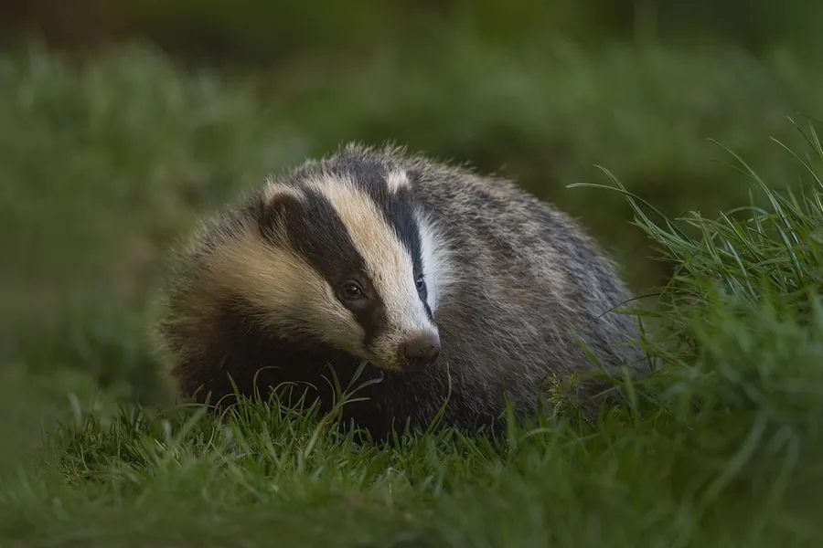

哺乳动物 · 动物界
欧亚獾 Meles meles

欧亚大陆林地中的大型鼬科动物，面部有醒目的黑白纵纹，善于挖掘复杂洞穴，以家族群居并共同维护巢穴。
- 分类
- 门脊索动物门纲哺乳纲目食肉目科鼬科属獾属
- 栖息环境
- 阔叶林、混交林、农田与林缘灌丛，土壤松软处便于挖洞
- 地理分布
- 欧洲和亚洲的温带地区，中国东北、华北及西北有分布
- 保护级别
- IUCN 无危（LC）
物种志
欧亚獾体长 0.6–0.9 米，尾长 0.11–0.2 米，体重 7–17 kg，体形粗壮。它的被毛为灰褐色，腹部和四肢黑色，面部有一条从鼻尖延伸的白色纵纹和两侧黑色眼纹；四肢短粗，前爪长而锋利，适合挖掘。
欧亚獾分布于欧洲和亚洲的温带林地，从英国、斯堪的纳维亚到俄罗斯、中国，栖息于阔叶林、混交林、农田和林缘灌丛。它多在夜间活动，以家族群居，共同挖掘和维护庞大的洞穴系统，洞穴可有多达十几个出入口和数十米长的通道。欧亚獾是杂食动物，主食蚯蚓，也吃昆虫、果实、坚果、小型兽类和农作物。雌兽妊娠期较长，常延迟着床，每胎 2–5 仔。欧亚獾种群总体稳定，但道路和农业开发造成的栖息地破碎带来一定影响。
形态与习性
- 食性蚯蚓为主，也吃昆虫、果实、坚果与小型兽类
- 体长0.6–0.9 m，尾长 0.11–0.2 m
- 体重7–17 kg
- 寿命野外约 6–14 年
- 繁殖可延迟着床，每胎 2–5 仔
- 洞穴家族共同挖掘，有多达十几个出入口
- 活动节律多在夜间活动
趣味知识
- 欧亚獾的洞穴可有多达十几个出入口，由家族共同维护。
- 它以蚯蚓为主食，一个夜晚可翻找数百条蚯蚓。
- 欧亚獾面部有醒目的黑白纵纹，是它的识别特征。
- 雌獾可延迟胚胎着床，让幼仔在食物充足时出生。